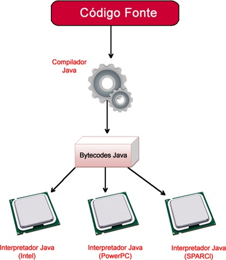

A linguagem de programação Java e o JDK
Este breve artigo trata da origem da linguagem de programação Java e elenca algumas de suas
características mais marcantes, desde de o código independente de plataforma até a popularização do
paradigma Orientado a Objetos, muito impulsionado depois da massiva adoção da plataforma Java.
Contexto histórico
Java surgiu em um momento em que o setor de tecnologia estava a pleno vapor, com a Internet se popularizando
em grande parte do mundo e permitindo que diferentes tipos de dispositivos se comunicassem e trocassem
informações em tempo real.
Nesse contexto surge, criada na Sun Microsystems, em 1991 a linguagem de programação Oak, que teve a sua
criação liderada por James Gosling, uma referência na área de programação na época. Um fato interessante é
que, como Oak já era uma marca registrada o time de desenvolvimento teve que trocar o nome do projeto, e por
conta do tipo de café que os membros do time mais consumiam ser o café proveniente da Ilha de Java este
acabou sendo o nome escolhido para a linguagem, não por acaso o logo do Java é uma xícara de café.
Introdução
Podemos expandir o que foi contado na contextualização histórico de forma mais aprofundada citando o projeto que culminou na criação do Java, o Project Green, que visava desenvolver as tecnologias mais modernas de software para clientes empresariais que fabricassem dispositivos eletrônicos ou que dependessem do software para alavancar os seus negócios. O principal objetivo era permitir que diferentes tipos de eletrodomésticos e eletrônicos pudessem receber algum tipo de “inteligência”, tornando-os mais úteis no dia a dia das pessoas, através da automatização de tarefas, onde tudo estaria conectado, buscando simplificar a vida dos usuários.
O foco principal do Project Green era que a plataforma criada, isto é o Java, pudesse ser facilmente executado em qualquer dispositivo móvel da época, sem depender de um sistema operacional em específico, ou seja, os desenvolvedores queriam portabilidade e simplicidade, para poderem escrever um código uma vez e executá-lo em qualquer lugar, com isso surge o sistema operacional GreenOS.
No ano de 1993 foi lançada a primeira versão do navegador gráfico Web, MOSAIC. O que permitiu que a Internet aumentasse exponencialmente em popularidade, haja visto que agora as pessoas tinham uma forma mais acessível de se conectar na rede.
Todavia, já no ano de 1995, as páginas Web ainda eram completamente estáticas e quase sem interatividade, então a Sun viu a oportunidade de finalmente introduzir o seu produto no mercado, através do ambiente Java, que consistia de uma máquina virtual, a JVM, responsável por permitir a execução dos código escritos em qualquer plataforma que possuísse o kit de desenvolvimento, JDK, tornando os softwares escritos independentes de plataforma, que já serviu para revolucionar o mercado de software dali em diante e tornar o Java uma das tecnologias mais importantes da sua geração, sendo extremamente relevante até os dias de hoje, quase 30 anos depois do seu lançamento.
As principais características e vantagens da linguagem Java são:
- Suporte à orientação a objetos;
- Portabilidade;
- Segurança;
- Linguagem Simples;
- Alta Performance;
- Dinamismo;
- Interpretada (o compilador pode executar os bytecodes do Java diretamente em qualquer máquina);
- Distribuído;
- Independente de plataforma;
- Tipada (detecta os tipos de variáveis quando declaradas).
O segredo para o Java ser multiplataforma
O fato de poder ser executado em computadores com diferentes tipos de sistemas operacionais instalados e em diferentes tipos de processadores trouxe ao Java uma popularidade extraordinária, e isso se deve ao conceito então introduzido "Write once, run anywhere", em tradução literal "Escreva uma vez, execute em qualquer lugar". Em linguagens como C e C++ o código que escrevemos é compilado para a linguagem de máquina correspondente à arquitetura da CPU onde o mesmo está sendo desenvolvido além de ficar atrelado à bilbiotecas específicas daquele sistema operacional, e isso acaba forçando o programador a fazer alterações no código e gerar um programa diferente se quiser ou precisar disponibilizar o seu software para diferentes plataformas.
No Java isso não ocorre, justamente porque ele próprio é uma plataforma, contemplando uma máquina virtual (JVM), um kit desenvolvimento de software (JDK) e um runtime (JRE) - que permite executar os softwares no computador.
A JVM é a Java Virtual Machine, em tradução livre Máquina Virtual Java, responsável por executar os aplicativos escritos em Java em tempo real. O grande segredo está aqui, já que a JVM é a grande responsável por tornar o Java independente de plataforma, já que ela emula um computador de forma virtual, de forma parece com o funcionamento de ferramento como o QEMU ou o VirtualBox. Desta forma, o Java não compila para a máquina física, que é onde o software será executado de fato, mas sim para a máquina virtual, que entende uma linguagem intermediária, chamada de bytecode. Assim sendo, para que uma pessoa consiga utilizar um programa desenvolvida com a plataforma java, basta que ela instale o JRE (Java Environment Runtime) específico para o seu sistema operacional para que o programa execute, sem que o desenvolvedor tenha fazer nenhuma modificação no código original.
Código aberto
Em 2006 a Sun Microsystem tornou pública a maior parte do código fonte do Java, tornando-o um software livre, o que contribuiu para popularizar ainda mais a plataforma e expandir a sua adoção em todo tipo de dispositivo e para todo tipo de aplicação que se possa imaginar.